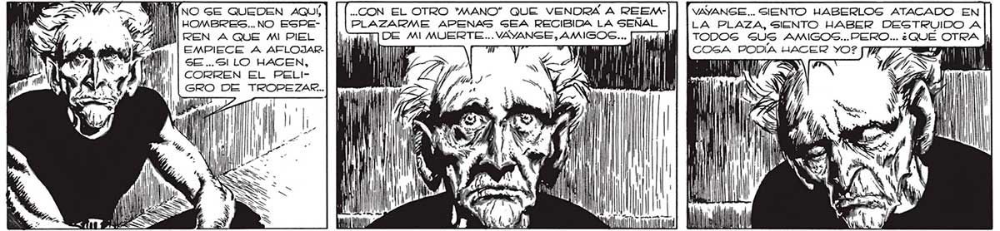
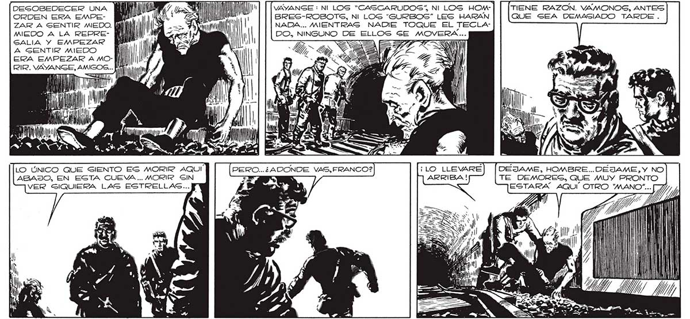

SWIWÍNNO SE QUEDEN AQUÍ, ..CON EL OTRO "'MANO” QUE VENDRÁ A REEM-| | [wyAnSE.. SIENTO HABERLOS ATACADO EN 24 AI] HOMBRES... NO ESPE- PLAZARME APENAS GEA RECIBIDA LA SEÑAL LA PLAZA, SIENTO HABER DESTRUIDO A IN REN A QUE MI PIEL mr ' Ml TODOS SUS AMIGOS... PERO EMPIECE A AFLOJAR-| 01h y P po Mi ] El mL COGA PODÍA HACER YO? SE..Sl LO HACEN, | -— | | CORREN EL PELI- ye GRO DE TROPEZAR.. «.. ¿QUE OTRA | 50 / [ AL Ñ MIN DesOseDECER UNA MIA In MN VAYANSE : NI LOS “CASCARUDOS” NI LOS HOMORDEN ERA EMPE- BM SAL BRES-ROBOTS, NI LOG “GURBOS” LES HARAN ame ' NADA... MIENTRAS NADIE TOQUE EL TECLAMIEDO A LA REPRE- IAN)!" WA es ' BO, bo DE ELLOS GE MOVERÁ. GALIA Y EMPEZAR Eur" ) ! E A GENTIR MIEDO Ñ | ERA EMPEZAR A MO- 1 RIR. VAYANGE, AMIGOS... fi X= pun LO UNICO QUE SIENTO ES MORIR AQUÍ ABAJO, EN ESTA CUEVA... MORIR SIN VER SIQUIERA LAS ESTRELLAS... DEJAME, HOMBRE..DEJAME, Y NO TE DEMORESG, QUE MUY PRONTO ESTARA AQUÍ OTRO TS, Jl lil Ul k Y mí A Ml

